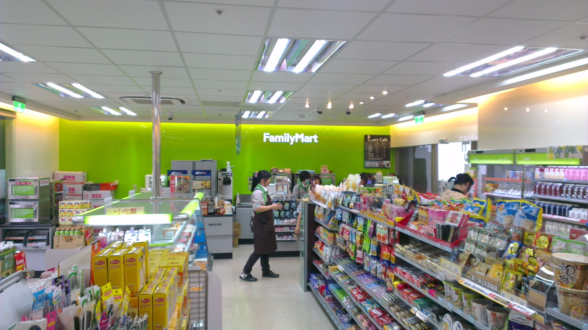
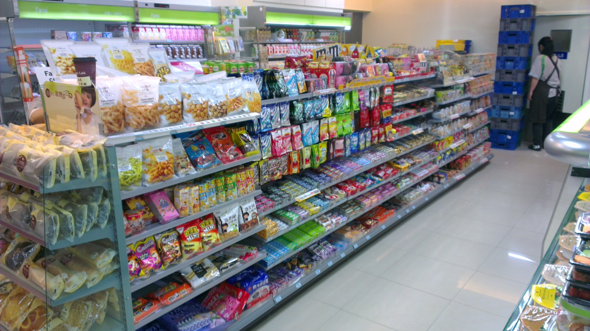
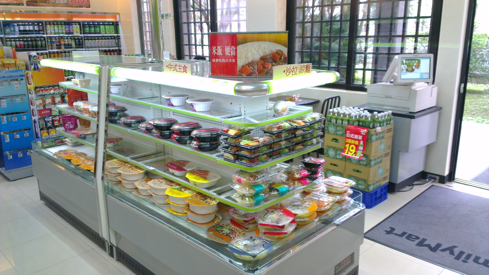

全家便利商店
- 本校營業地點位置 第一學生活動中心
- 餐飲業者名稱 全家便利商店(新台大店)
- 公司名稱 全家便利商店股份有限公司
- 營業時間及休息日 24小時營業
- 聯絡電話 (02)2368-8949
- 營業項目、型態 便利商店
- 業者簡介
【全家便利商店】創立於1988年8月，目前擁有店鋪 2813店(2013年3月31日止)，亦是國內第一間通過擁有SGS認證之便利商店， 集各大品牌之暢銷商品,多元化經營模式，以便提供顧客全方位服務。本全家便利商店(新台大店)為新成立之便利店，前身為台二店。販賣之商品與服務如下：ㄧ般便當、飯糰、速食、飲料，甜點及一些微波食品外，目前亦導入首創之霜淇淋機台。另有提供代收業務、電子商務、預購商品、資訊產品、Ups宅配通等服務,以滿足消費者全方位需求，全家便利商店更本著服務全台大師生及校友的精神，憑證件於本店消費全面九折回饋， - （酒、乳類、報紙、農產品及其他特價商品除外）。
- ※ 優惠方案：所有商品9折優惠。
- （酒、乳類、報紙、農產品及其他特價商品除外）。
餐廳業者參考照片
- 
- 
- 